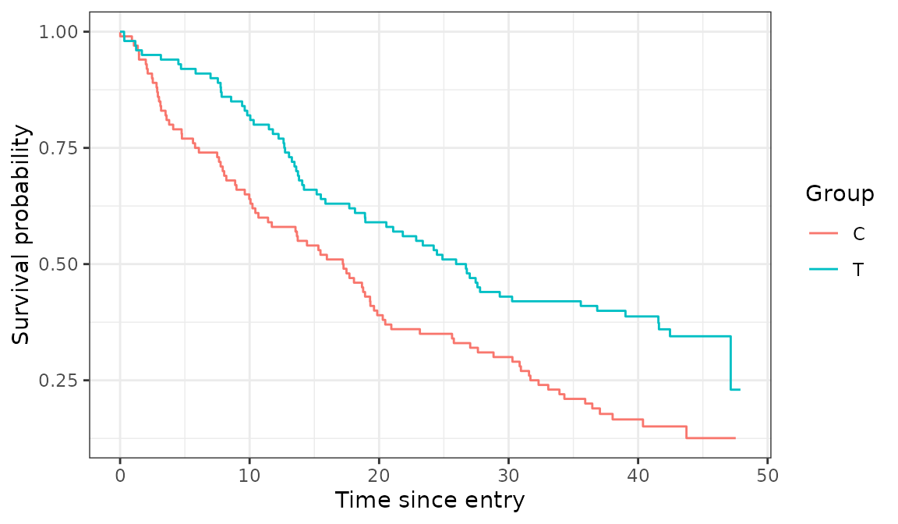
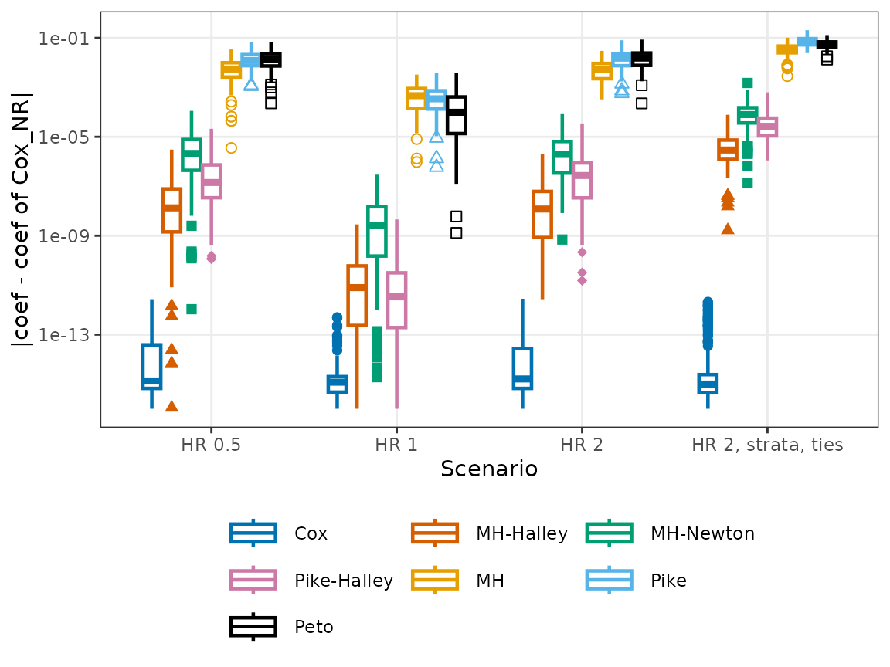
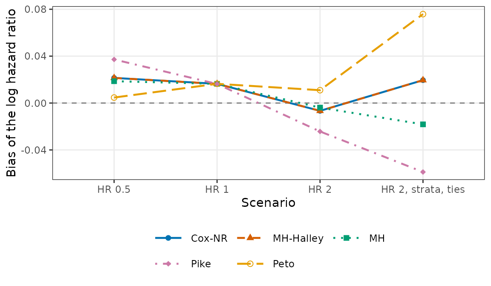
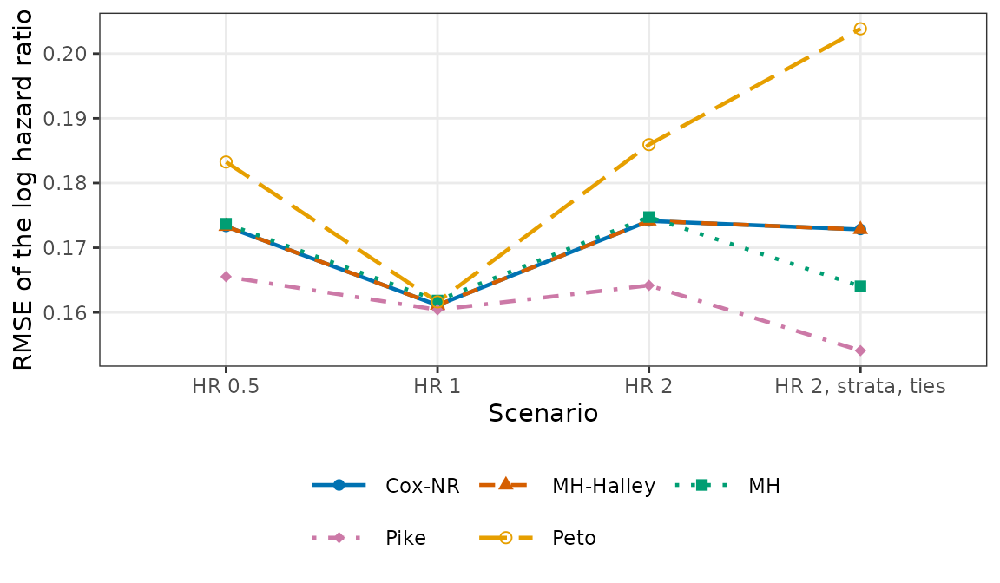
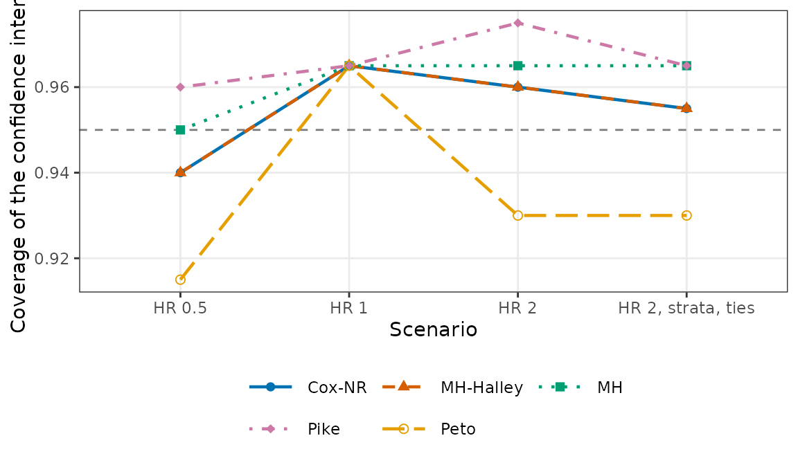
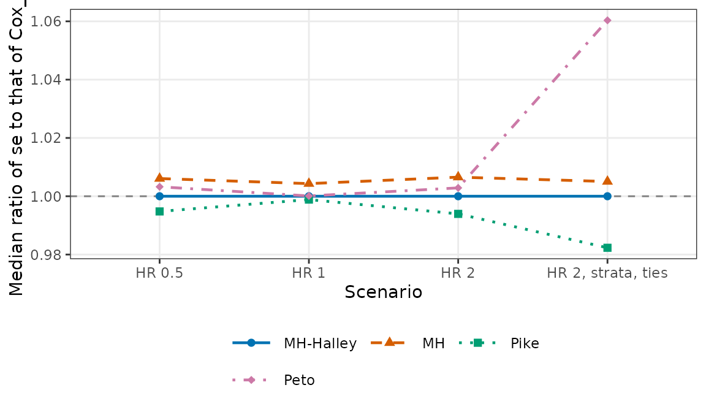
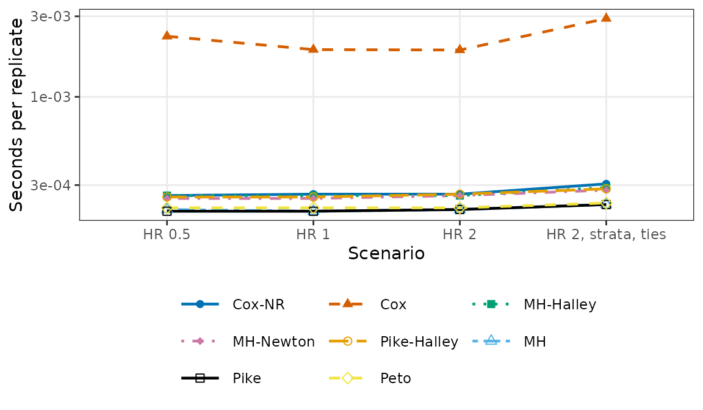

GenSimData() generates two-group trials, and
CompareOC() applies the estimators of EstHR()
to them and summarizes how they behave. This article shows both.
Simulated trials
In each trial of GenSimData(), subjects enter uniformly
over an accrual period of length a, their survival times
are exponential with hazard hazard_C in the control group
and HR * hazard_C in the treatment group, and the analysis
takes place at the E-th event. Subjects without an event by
then are censored.
one <- GenSimData(nsim = 1, n_T = 100, n_C = 100, hazard_C = log(2) / 18,
HR = 0.7, a = 12, E = 150, seed = 2)
head(one)
#> Key: <simID, time>
#> simID group time event
#> <int> <fctr> <num> <int>
#> 1: 1 C 0.01193798 1
#> 2: 1 T 0.30343148 1
#> 3: 1 T 0.32418025 1
#> 4: 1 C 0.91170600 1
#> 5: 1 C 1.06545909 1
#> 6: 1 T 1.17613774 1The group is a factor with levels "T" and
"C". With vectors, EstHR() is told which group
is the control group:
EstHR(one$time, one$event, one$group, control = "C",
method = c("MH_Halley", "Cox_NR"))
#> Hazard ratio of the treatment group relative to the control group
#>
#> Treatment (T): n = 100, events = 65
#> Control (C): n = 100, events = 85
#> Ties: efron
#>
#> coef exp(coef) se(coef) z Pr(>|z|)
#> MH_Halley -0.5773 0.5614 0.1659 -3.48 0.000501
#> Cox_NR -0.5773 0.5614 0.1659 -3.48 0.000501
#>
#> exp(coef) lower .95 upper .95
#> MH_Halley 0.5614 0.4056 0.7771
#> Cox_NR 0.5614 0.4056 0.7771
#>
#> Methods:
#> MH_Halley Halley step from the Mantel-Haenszel estimate (proposed)
#> Cox_NR Cox estimate by Newton-Raphson iterationThe Kaplan-Meier curves of this trial:
km <- survival::survfit(survival::Surv(time, event) ~ group,
data = as.data.frame(one))
km_d <- data.frame(time = km$time, surv = km$surv,
group = rep(sub("group=", "", names(km$strata)),
km$strata))
# The curves start at survival 1 at time 0
km_d <- rbind(data.frame(time = 0, surv = 1, group = unique(km_d$group)),
km_d)
ggplot(km_d, aes(x = time, y = surv, colour = group)) +
geom_step() +
labs(x = "Time since entry", y = "Survival probability", colour = "Group") +
theme_bw()
Strata with their own baseline hazards are given by
strata_prop and strata_hazard, and
time_unit rounds the times up to multiples of a unit, which
produces tied event times.
two <- GenSimData(nsim = 1, n_T = 100, n_C = 100, hazard_C = log(2) / 18,
HR = 0.7, a = 12, E = 150, strata_prop = c(0.5, 0.5),
strata_hazard = c(1, 3), time_unit = 1, seed = 2)
table(stratum = two$stratum, group = two$group)
#> group
#> stratum T C
#> 1 45 46
#> 2 55 54In this trial, the 150 events fall on 30 distinct times.
Comparing the estimators
CompareOC() runs GenSimData() for each
scenario (one row of a data frame), applies EstHR() to each
trial, and summarizes each method. The scenarios below have hazard
ratios on both sides of 1 and, in the last one, strata and tied times.
The reference for the deviations is "Cox_NR", the Cox
estimate by Newton-Raphson iteration on the risk-set summaries.
scenarios <- data.frame(
label = c("HR 0.5", "HR 1", "HR 2", "HR 2, strata, ties"),
n_T = 100,
n_C = 100,
hazard_C = log(2) / 18,
HR = c(0.5, 1, 2, 2),
a = 12,
E = 150,
time_unit = c(0, 0, 0, 1)
)
scenarios$strata_prop <- list(NULL, NULL, NULL, c(0.5, 0.5))
scenarios$strata_hazard <- list(NULL, NULL, NULL, c(1, 3))
nsim <- 200
res <- CompareOC(scenarios,
methods = c("Cox_NR", "Cox", "MH_Halley", "MH_Newton",
"Pike_Halley", "MH", "Pike", "Peto"),
nsim = nsim, seed = 1, reference = "Cox_NR")
res
#> Operating characteristics of hazard ratio estimators
#> 4 scenarios; 200 replicates each; reference: Cox_NR; ties: efron; conf.level: 0.95
#>
#> Scenario HR 0.5 (true HR = 0.5)
#> n_NA dev_med dev_max se_ratio bias rmse coverage time
#> Cox_NR 0 0.00e+00 0.00e+00 1.000 0.02144 0.173 0.940 0.000260
#> Cox 0 1.33e-15 2.70e-12 1.000 0.02144 0.173 0.940 0.002285
#> MH_Halley 0 1.34e-08 3.04e-06 1.000 0.02144 0.173 0.940 0.000260
#> MH_Newton 0 2.13e-06 1.12e-04 1.000 0.02145 0.173 0.940 0.000250
#> Pike_Halley 0 1.42e-07 2.10e-05 1.000 0.02144 0.173 0.940 0.000255
#> MH 0 5.52e-03 3.41e-02 1.006 0.01863 0.174 0.950 0.000215
#> Pike 0 1.22e-02 6.74e-02 0.995 0.03719 0.166 0.960 0.000210
#> Peto 0 1.36e-02 6.86e-02 1.003 0.00469 0.183 0.915 0.000220
#>
#> Scenario HR 1 (true HR = 1)
#> n_NA dev_med dev_max se_ratio bias rmse coverage time
#> Cox_NR 0 0.00e+00 0.00e+00 1.000 0.0164 0.161 0.965 0.000265
#> Cox 0 1.19e-15 4.98e-13 1.000 0.0164 0.161 0.965 0.001905
#> MH_Halley 0 7.95e-12 2.87e-09 1.000 0.0164 0.161 0.965 0.000260
#> MH_Newton 0 2.61e-09 2.94e-07 1.000 0.0164 0.161 0.965 0.000250
#> Pike_Halley 0 3.36e-12 4.53e-09 1.000 0.0164 0.161 0.965 0.000255
#> MH 0 4.60e-04 3.27e-03 1.004 0.0164 0.162 0.965 0.000210
#> Pike 0 3.44e-04 3.84e-03 0.999 0.0163 0.160 0.965 0.000210
#> Peto 0 9.80e-05 3.70e-03 1.000 0.0164 0.162 0.965 0.000220
#>
#> Scenario HR 2 (true HR = 2)
#> n_NA dev_med dev_max se_ratio bias rmse coverage time
#> Cox_NR 0 0.00e+00 0.00e+00 1.000 -0.00666 0.174 0.960 0.000265
#> Cox 0 1.61e-15 2.81e-12 1.000 -0.00666 0.174 0.960 0.001895
#> MH_Halley 0 1.20e-08 1.94e-06 1.000 -0.00666 0.174 0.960 0.000260
#> MH_Newton 0 1.94e-06 8.29e-05 1.000 -0.00667 0.174 0.960 0.000260
#> Pike_Halley 0 2.73e-07 3.47e-05 1.000 -0.00667 0.174 0.960 0.000265
#> MH 0 5.42e-03 2.99e-02 1.007 -0.00389 0.175 0.965 0.000215
#> Pike 0 1.52e-02 8.02e-02 0.994 -0.02426 0.164 0.975 0.000215
#> Peto 0 1.53e-02 8.53e-02 1.003 0.01096 0.186 0.930 0.000220
#>
#> Scenario HR 2, strata, ties (true HR = 2)
#> n_NA dev_med dev_max se_ratio bias rmse coverage time
#> Cox_NR 0 0.00e+00 0.00e+00 1.000 0.0195 0.173 0.955 0.000305
#> Cox 0 9.99e-16 2.10e-12 1.000 0.0195 0.173 0.955 0.002910
#> MH_Halley 0 2.92e-06 7.76e-05 1.000 0.0195 0.173 0.955 0.000290
#> MH_Newton 0 7.92e-05 1.50e-03 1.000 0.0194 0.173 0.955 0.000280
#> Pike_Halley 0 2.66e-05 6.27e-04 1.000 0.0195 0.173 0.955 0.000285
#> MH 0 3.40e-02 1.02e-01 1.005 -0.0182 0.164 0.965 0.000230
#> Pike 0 7.13e-02 2.05e-01 0.982 -0.0588 0.154 0.965 0.000230
#> Peto 0 5.68e-02 1.30e-01 1.060 0.0759 0.204 0.930 0.000235
#>
#> dev: |coef - coef of the reference| (median and maximum); se_ratio: median of
#> se / se of the reference; time: seconds per replicate. All summaries are in x$summary.Deviation from the Cox estimate
The first figure shows, for each method and scenario, a box plot of the absolute difference from the Cox estimate over the 200 trials.
plot(res, what = "deviation")
The largest difference of MH-Halley over all scenarios is 7.8 × 10-5, compared with 0.1 for the Mantel-Haenszel estimate, 0.2 for the Pike estimate, and 0.13 for the Peto estimate. Written with two decimals, the hazard ratio of MH-Halley differs from that of the Cox estimate in none of the trials, compared with all the trials of at least one scenario for the Peto estimate.
Bias, RMSE, and coverage relative to the true hazard ratio
The next figures show the anchors and MH-Halley; MH-Halley lies on
top of the Cox estimate ("Cox_NR"), and the one-step
corrections and "Cox" would lie there too.
plot(res, what = "bias", methods = shown)
plot(res, what = "rmse", methods = shown)
plot(res, what = "coverage", methods = shown)
The table gives these summaries for MH-Halley and the Cox estimate. They are close, because the two estimates differ by far less than their standard errors.
tab <- s[s$method %in% c("MH_Halley", "Cox_NR"),
c("label", "method", "bias", "rmse", "coverage", "se_mean")]
tab$method <- gsub("_", "-", tab$method)
for (v in c("bias", "rmse", "se_mean")) tab[[v]] <- sprintf("%.4f", tab[[v]])
tab$coverage <- sprintf("%.3f", tab$coverage)
knitr::kable(tab, row.names = FALSE, align = "llrrrr",
col.names = c("Scenario", "Method", "Bias", "RMSE", "Coverage",
"Mean SE"))| Scenario | Method | Bias | RMSE | Coverage | Mean SE |
|---|---|---|---|---|---|
| HR 0.5 | Cox-NR | 0.0214 | 0.1733 | 0.940 | 0.1671 |
| HR 0.5 | MH-Halley | 0.0214 | 0.1733 | 0.940 | 0.1671 |
| HR 1 | Cox-NR | 0.0164 | 0.1611 | 0.965 | 0.1637 |
| HR 1 | MH-Halley | 0.0164 | 0.1611 | 0.965 | 0.1637 |
| HR 2 | Cox-NR | -0.0067 | 0.1741 | 0.960 | 0.1674 |
| HR 2 | MH-Halley | -0.0067 | 0.1741 | 0.960 | 0.1674 |
| HR 2, strata, ties | Cox-NR | 0.0195 | 0.1728 | 0.955 | 0.1702 |
| HR 2, strata, ties | MH-Halley | 0.0195 | 0.1728 | 0.955 | 0.1702 |
With 200 trials, the Monte Carlo standard error of a coverage near the nominal level 0.95 is about 0.015.
Standard errors and computing time
The ratio of the standard error of each method to that of the Cox estimate:

The computing time per trial depends on the machine. All methods
except "Cox" share the risk-set summaries;
"Cox" calls survival::coxph().
plot(res, what = "time")